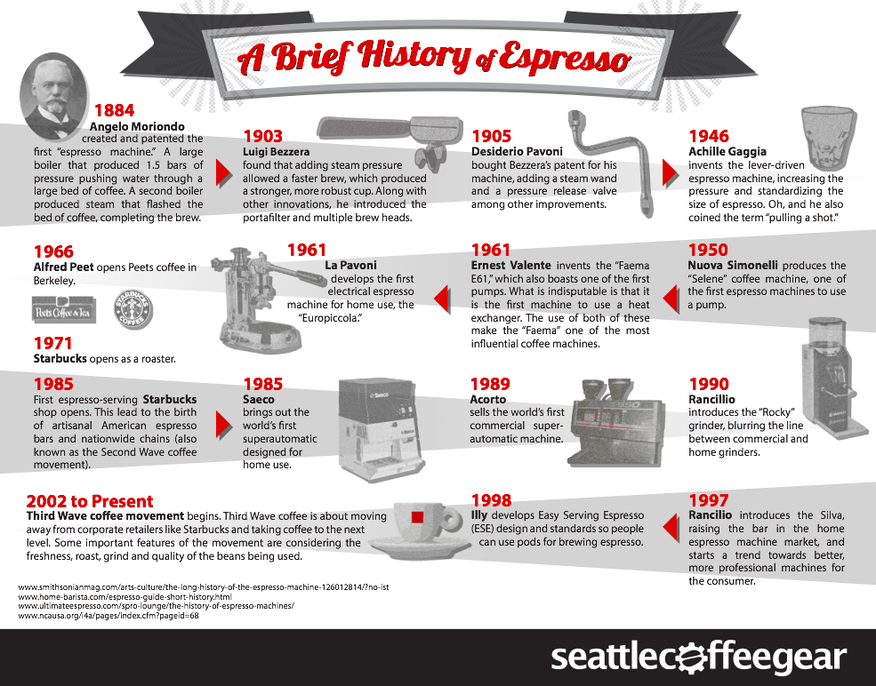
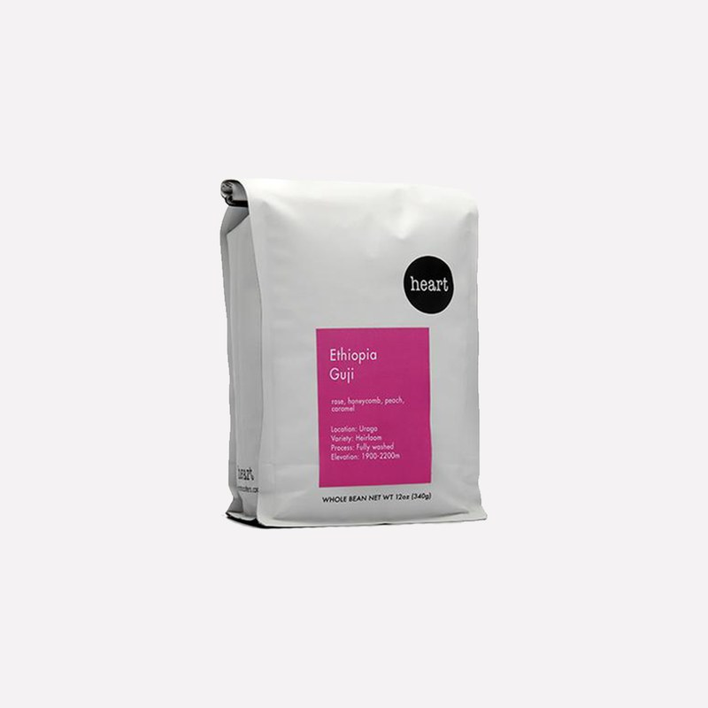
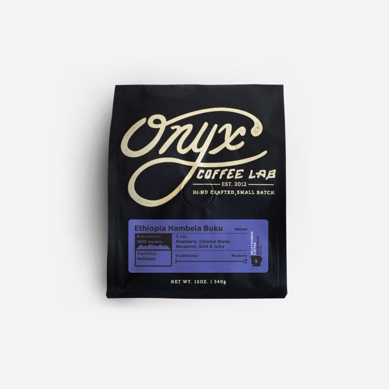
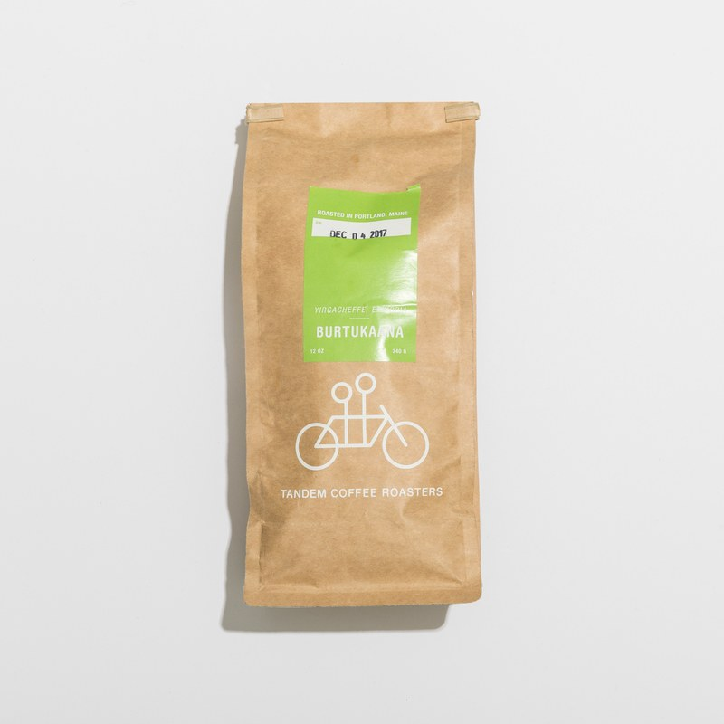

Since the fabled discovery of coffee by the Ethiopian goat herder Kaldi in around 300 A.D., coffee has been a powerful influence in shaping the world’s history and culture. Coffee is the second most traded commodity (after oil) and provides employment for hundreds of millions of people around the globe. However, one of the most popular forms of coffee (and one of our favorites), espresso is very different than the coffee Kaldi was drinking. The coffee Kaldi created was likely a brew of skins, pulp and beans of the coffee cherry combined with boiling water, and certainly not the finely ground coffee shot through with the hot water we receive today when we brew up a cup on our beloved espresso machine. So how did espresso in its current form, which means “fast” in Italian, get created? Moreover what made it so popular that it became the fuel for our everyday lives?
 See for yourself|  |
Heart"Heart holds a special place in my own coffee nerd evolution: I made my first great cup of coffee using its beans. And the roaster serves as a great entry point into the specialty coffee world. The Portland-based roaster churns out some extremely fruity beans, making it easy to pick up on their tasting notes. You’ll feel like the owner of a real advanced palette while saying things like, I really taste the mango on this one, while wisely rubbing your chin. It’s also widely available in third wave coffee shops—it’s getting Big to the point where I wake up in cold sweats after dreaming the roaster’s gone the way of Stumptown and Blue Bottle and gotten itself acquired by a corporation like Peets or Nestle. And in our GQ cupping, Heart was far and away the crowd favorite." |
|  |
Onyx"Coming to you straight from Arkansas is Onyx Coffee Lab. Over the past couple years, Onyx has taken the coffee world by storm. It won first place at the US Roaster Championship and US Brewers Cup Championship and took second at the US Barista Championship all in 2017 alone. The list becomes unwieldy if I go any further. Onyx Coffee Lab earns its accolades—and name—by experimenting with its beans. It won the US Brewers Cup with a coffee that sat in a tank of water, sealed off from oxygen, and left to ferment in its own juices for 80 hours. If you’re looking for funky, experimental beans, you’ll want to order them from Onyx Coffee Lab." |
|  |
Tandem"The story of Tandem is ready-made as the plot of a hipster romcom. Husband and wife duo Will and Kathreen Pratt, both Blue Bottle alums, found the hustle and bustle of the big city (San Francisco) too tiresome. They packed their things and made their way to the other Portland (Maine) and set up a coffee shop and bakery inside an old gas station. From there they started churning out some of the best pastries and coffee in the US. The coffees in particular are special and claim to come with some spectacularly fruity notes: “watermelon,” “orange soda,” “blood orange,” and “strawberry candy.” When asked why they named the shop Tandem, Kathleen told Fresh Cup magazine, “Anytime you see people riding a tandem it makes you smile.” That’s the opening line of the movie!" |